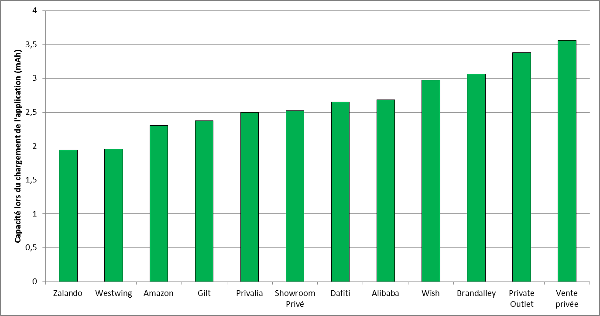
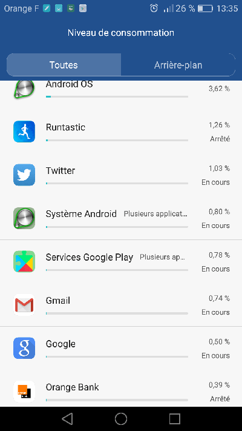

TL ; DR
Smartphones’ battery life has been plateauing for a few years. Manufacturers offer batteries with a greater capacity, users state battery life is one of the main purchasing criteria, and, yet, the average battery life of devices doesn’t increase. Why that, you may ask? Because hardware itself is more powerful, thus more energy-intensive; and also because applications consume more and more resources.
As a consequence, in order to improve the way users perceive their devices, manufacturers point at the most energy-intensive applications, encouraging developers to be more virtuous in terms of development. Google has the same reasoning with the Play Store, favoring the ranking of the lightest applications. So, yes, even a “general public” application used only from time to time must be optimized to consume the least battery possible. By avoiding that your application appears as “energy-intensive”, you improve its indexing, retention and in fine the user experience. Many factors key to the success of your app.
Battery life, hardware selection criterion
Any smartphone user has already faced a critical situation because of a very low battery level: no way to be reached anymore, an address impossible to found right before an important meeting, no train or plane ticket to show the controller… The – almost – vital need to maintain a fully charged battery has become a true concern for half the world population.
Hence, it isn’t surprising that battery life is one of the main selection criteria for buyers. Manufacturers are constantly working on improving the efficiency of batteries and hardware. And the technology press follows closely the subject.
While waiting for a hypothetical new and ideal technology, solutions regularly emerge. The range of applicative “solutions” allowing the optimization of battery consumption is very wide on the different stores, however with no strong impact on battery life improvement. Facing this, users fall back on palliatives: USB battery extensions (“power banks”), mini solar panels,… many accessories adding up to the initial budget and cluttering up bags.
In spite of all that, the « low battery anxiety » phenomenon keeps rising.
Aren’t manufacturers doing something?
This issue is well known from manufacturers. Indeed, improving battery life is a true challenge operating at the level of every single component: of course batteries, but also size and screen technology, choice of electronic components, their complete integration, and software layers. Manufacturers integrate OS (like Android), develop drivers for electronic components but also develop applications for users, by creating them or adapting AOSP Android applications.
But why working on applications?
Well, simply because the hardware platform is not the only cause of battery discharge. Software layers are not innocent in this issue, far from it actually. If we think about it a bit more, it is normal! Here is an example of a simplified curve representing the energy consumption during the loading of an application:

We can see the overconsumption caused by the launch of the application.
As you might know already, all applications don’t have the same impact on the phone’s overall battery life. Here is the comparison of consumption when launching an e-commerce application, which basically doubles:

The use of features such as GPS, Bluetooth or video (or in the near future AR or VR features) has an impact, but it is not the only cause of inequalities. Indeed, depending on the design, use, external services, sensors it will solicit… an application will consume more or less.
Unfortunately (or fortunately), applications do have a strong impact on our smartphones’ battery life.
Applications’ impact, a major criterion
Manufacturers are aware of this applications’ impact. They work on optimizing their own applications, but have no power on applications installed on the phone once it is out of the factory… It starts with phone operators or integrators, who add their own applications to the device. Then users install whatever they want. All these applications will have a more or less important impact on battery life. In the end, even if the manufacturer isn’t directly responsible, the user will associate the poor battery life of the device with the brand and the phone’s model: 71% of users consider that the quality of an application can have influence on the brand image (Source: baromètre des usages mobiles ,Juin 2017, EBG).
As a consequence, it is in the manufacturers’ best interest to encourage applications editors to control their apps’ battery consumption. In the same way, it is in Google’s interest to promote virtuous applications on the Play Store, so that it reflects a positive image of the Android ecosystem, in comparison with Apple’s… and vice versa.
What are manufacturers doing? They report you to users.
Manufacturers should find interests in sensitizing users to this complex battery life issue and making the applications designer take the fall.
For example, let’s cite Huawei which now sends out explicit notifications to its users in case of a detected overconsumption:

This same will to promote energy-thrifty applications is now integrated in Google and Apple ecosystems. It has been a while now that platforms don’t hesitate pointing at energy-intensive applications. In order to do that, the system lists each application’s share of consumption:

Android 8.10 Oreo latest version reinforces this functionality by adding a notification of consuming applications :
But this reasoning isn’t just limited to the user’s phone as we can also find it on the stores. That way, Google takes into account consumed energy in its ASO indexing criterion for applications.
You probably know by now that efficiency is key for a good SEO, and Google confirms it also is for applications (ASO). It is a criterion you cannot neglect since 80% of users use the store as entry point for their application search (Source: baromètre des usages mobiles, Juin 2017,EBG).
Want an example? Google explains what Busun went through, which is going from a 4.1 to a 4.5 rating by improving its performance.
What does the user do?
Let’s suppose the user found your application on the store, was convince to install it, well now remains the hard part: retention of the app. Either your app belongs to the dozen of “critical” must-have applications with no real equivalent (Google Maps, Facebook…): in that case the user accepts the battery consumption as necessary, he/she complains but will keep your app.
Or, your application belongs to the millions of other apps, considered non-essential – or with numerous alternatives (online banks, informative press, etc): in this case, the user will be quick to uninstall your app to switch to your competitors’. And he/she may even leave a bad rating or mean comment to your app on the store.
Conclusion
General public applications owners sometimes think the impact of their app on the device’s battery life isn’t an issue. After all, it is only used from time to time; it is not necessarily that ONE application that is discharging the whole battery, right? Well, we saw it isn’t true. Even a general public application can strongly be impacted by a behavioral default. And users WILL realize it: degraded indexing, low retention, negative comments… The success of an application also comes from the good management of its efficiency.